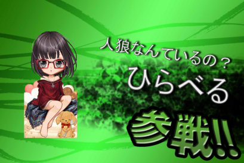
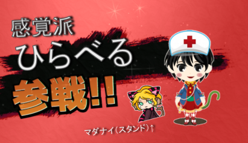
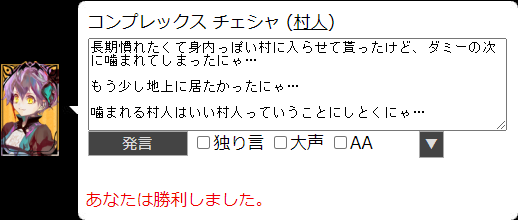
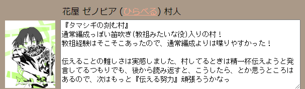
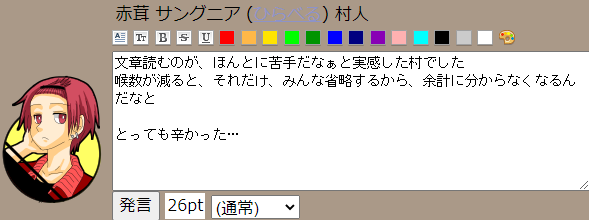

◇ 長期人狼 ◇
長期人狼は人の感情が流れてくるのが感じ取れて、楽しいと思ったんだけど、
それ以上に文章読むのが苦手というか嫌いというか…
それを痛感しています
特にアンカーの多い長文、最後まで読んでるうちに
はじめに言ってたことが分からなくなるんですよね…
必要なことは箇条書きとかにしたり、分割したりして
読んだりするぐらい、長文の内容の理解が苦手なので…
アンカー恐怖症に陥ってるので(アンカー多いところ無視していいなら全然いいんですけど…)
アンカー多用がなさそうな、圧縮言語が少なそうな村があればお誘い頂けたら嬉しいです
| discord【長期】アナザー人狼【第二回】 | ひらべる (素村) | 2020/12/06 |
役職希望制で素村を希望して素村でした。  |
||
| discord【長期】アナザー人狼 | ひらべる (警察) | 2020/10/18 |
昔、yahooにあったアナザー人狼の長期版にゃ  |
||
| 【身内】二次会をしよう村【妖入り】 | チェシャ (村人) | 2020/10/11 |
二次会だけ、イケメン枠で参加させてもらったにゃ  |
||
| タマシギの刻む村【笛入り】 | ゼノビア (村人) | 2020/09/25 |
ログ読みたくない！って思った日がなかった、それだけでとても嬉しかったです  |
||
| 初心者がいる村・せぶんす！ | サングニア (村人) | 2020/07/11 |
みんなが茸語(アンカーと記号多用で文章として読みにくい)で喋っててかなり辛かった…  |
||
| 【誰歓】隙間時間で遊ぼう村【5文字×3発言】 | 【鳥】アナトラ (村人) | 2020/05/29 |
灰で叫びすぎました！かなり言葉悪かった、ゴメンナサイ…
|
||
| 【G編成初歓】縁結びし螺旋の村 | 【獣】ビアンカ (村人) | 2020/02/28 |
はじめてのG編成、はじめてのガチ村で800pt。 |
||

Copyright(c)2020 りゅ all rights reserved.